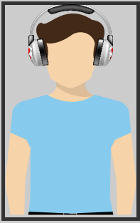

Audio Recording Tips
Good Quality Audio Narration

The quality of your narration helps onscreen learning. Practice your narration before you record your screencast.
Find a Quiet Spot in your House

Avoid noise as much as possible. If noise overlaps your speech, post production audio cleaning tends to degrade audio quality.
Choose the Right Mic

Different mics have different recording characteristics. Reading the brochure should help understand its characteristics.
Place Blankets/Pillows Around your Recording Equipements

This helps cancel out noise from equipements like PCs and laptops.
Clap Around the Room

This helps detect rooms or areas with echo. Avoid rooms with echoes as it cannot be edited out of your narration.
A Room with Furniture Helps Cancel Echo

Wood and other absorbing textures dampen echo and enhance audio quality. Record in a room that has furniture.
Clothes are the Best Way to Avoid Echoes

It's preferable to work in a room with clothes hung on all sides.
Avoid Editing Your Audio

Do not use preset filters or noise removal techniques in your audio.
Maintain a Steady Distance from the Mic

Always maintain a fixed distance from the mic. Place it ideally 10cms from your mouth.
Listen to Your Narration
